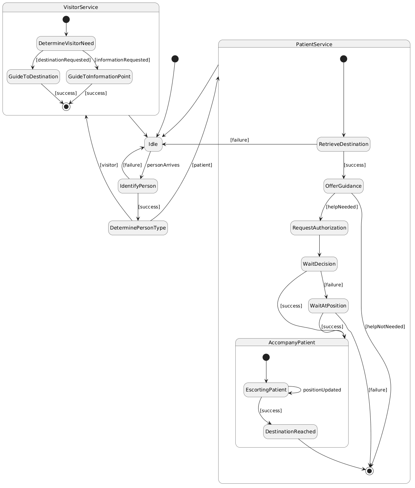
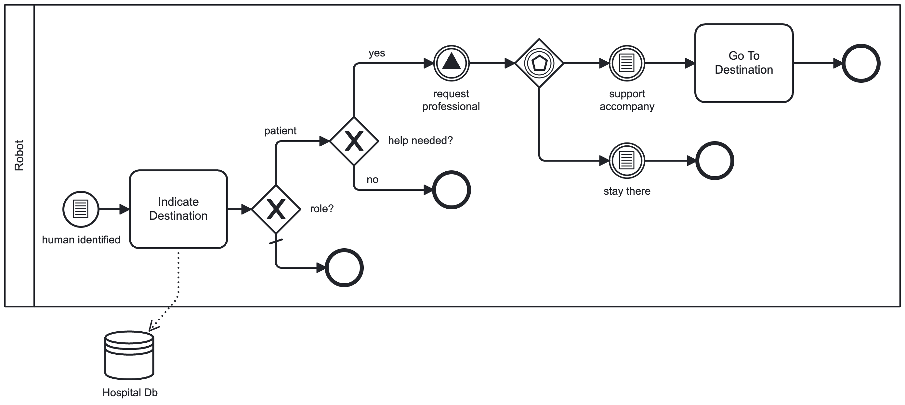

Welcoming People to Hospital
Description
A robot should identify visitors or patients, and then, thanks to the robot's connection to the hospital's administrative database, the robot would indicate where the patient should go. If the patient needs help to reach the destination, the robot would send a request for help to the professional who is managing the entrance to decide if the robot can leave its position at that moment to accompany the person to his/her destination, or should wait in its position. At all times, the healthcare operator who is waiting for the person will know the exact place where the patient is. Visitors can also be helped. The robot can help the person find the destination or the closest information point in the ward. While idle, the robot can begin extra tasks if a human request does not preempt them, such as the identification of patients with fever.
Askarpour, Mehrnoosh, et al. Robomax: Robotic mission adaptation exemplars. 2021 International Symposium on Software Engineering for Adaptive and Self-Managing Systems (SEAMS). IEEE, 2021.
BT

Welcoming People to Hospital - Behavior Tree
SM

Welcoming People to Hospital - State Machine
HTN

Welcoming People to Hospital - HTN
BPMN

Welcoming People to Hospital - BPMN